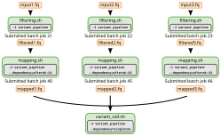

This section of the materials page is still under development
--dependency option to start a job after another job finishes.A job is said to have a dependency when it only starts based on the status of another job. For example, take this linear pipeline:
script1.sh ----> script2.sh ----> script3.shwhere each script is taking as input the result from the previous script.
We may want to submit all these scripts to SLURM simultaneously, but making sure that script2 only starts after script1 finishes (successfully, without error) and, in turn, script3 only starts after script2 finishes (also successfully).
We can achieve this kind of job dependency using the SLURM option --dependency. There are several types of dependencies that can be used, some common ones being:
| syntax | job starts after the specified jobs have… |
|---|---|
--dependency=after:jobid[:jobid...] |
started |
--dependency=afterany:jobid[:jobid...] |
terminated (with or without an error) |
--dependency=afternotok:jobid[:jobid...] |
terminated with an error |
--dependency=afterok:jobid[:jobid...] |
terminated successfully (exit code 0) |
Sometimes, you may submit several jobs and then want to submit a final job to compile the results from all of them. In this case the option --dependency=singleton can be used, and the job will start after all previously launched jobs with the same name and user have ended.

Example of a pipeline using job dependencies. Each of the first steps of the pipeline (filtering.sh) have no dependencies. The second steps of the pipeline (mapping.sh) each have a dependency from the previous job; in this case the --dependency=afterok:JOBID option is used with sbatch. The final step of the pipeline (variant_call.sh) depends on all the previous steps being completed; in this case the --dependency=singleton is used, which will only start this job when all other jobs with the same name (-J variant_pipeline) complete.
One inconvenience of the --dependency=afterok:JOBID option is that we need to know the job ID before we launch the new job. To overcome this problem, we can automate our job submission scripts by:
sbatch commandsLet’s take a simple example of having two scripts, one that creates a file and another that moves that file. The second script can only run successfully once the previous script has completed:
# first script - creates a file
touch dep_test.txt# second script - moves the file
mv dep_test.txt dep_test_moved.txtTo automate the job submission process, we could write the following job submission script:
# launch the first job, capturing the JOB ID into a variable
RUN_ID_1=$(sbatch 001_create.sh | cut -d " " -f 4)
echo "First job submitted with the run ID ${RUN_ID_1}"
RUN_ID_2=$(sbatch --dependency=afterok:${RUN_ID_1} 002_move.sh | cut -d " " -f 4)
echo "Second job submitted with the run ID ${RUN_ID_2}"The trick here is to use the cut command to retrieve the job number from the message that sbatch produces, which looks like “Submitted batch job --dependency option of the next job.
Dependencies and Arrays
The job dependency feature can be combined with job arrays to automate the running of parallel jobs as well as launching downstream jobs that depend on the output of other jobs.
In Exercise 1 of the job arrays section, we had adjusted the script slurm/parallel_estimate_pi.sh to repeatedly run our stochastic Pi number estimator algorithm. In that exercise, we had then combined our results by running the cat command from the terminal:
cat results/pi/replicate_*.txt > results/pi/combined_estimates.txtHow could you instead submit this as a job to SLURM, ensuring that it only runs once the previous jobs are finished?
There are two ways to do this: using singleton or afterok dependencies.
Using the singleton option
For this solution, we first need to ensure that we give a job name to our first script slurm/parallel_estimate_pi.sh by adding #SBATCH -J pi_simulations, for example.
Then, we could create a new submission script with the following:
#!/bin/bash
#SBATCH -p training # name of the partition to run job on
#SBATCH -D /scratch/FIXME/hpc_workshop
#SBATCH -o logs/combine_pi_results.log
#SBATCH -c 1 # number of CPUs. Default: 1
#SBATCH --mem=1G # RAM memory. Default: 1G
#SBATCH -t 00:10:00 # time for the job HH:MM:SS. Default: 1 min
#SBATCH -J pi_simulations
#SBATCH --dependency=singleton
cat results/pi/replicate_*.txt > results/pi/combined_estimates.txtThe two key SBATCH options are -J pi_simulations (which would match the job name with the one from the previous script) and --dependency=singleton (which will only run the job once all jobs with that same name complete).
Using the afterok option
In this case, we would need to capture the JOBID of the first job and then launch the second job using that ID as its dependency.
Let’s say that the script to combine the results was called combine_pi.sh, with the following code:
#!/bin/bash
#SBATCH -p training # name of the partition to run job on
#SBATCH -D /scratch/FIXME/hpc_workshop
#SBATCH -o logs/combine_pi_results.log
#SBATCH -c 1 # number of CPUs. Default: 1
#SBATCH --mem=1G # RAM memory. Default: 1G
#SBATCH -t 00:10:00 # time for the job HH:MM:SS. Default: 1 min
cat results/pi/replicate_*.txt > results/pi/combined_estimates.txtNote that we do not specify the --dependency option within the script. Instead, we can specify it in a separate command where we capture the JOBID of the first job and then use that for the second job:
# launch the first job - capture the JOB ID into a variable
JOB1=$(sbatch slurm/parallel_estimate_pi.sh | cut -d " " -f 4)
# launch the second job
sbatch --dependency=afterok:$JOB1 slurm/combine_pi.shIt is also worth noting that, in this case, the first job submits a series of sub-jobs using arrays. But all we need to do is use the main JOBID as the dependency, and this will ensure that it only starts when all the job arrays have completed.
Building Complex Pipelines
Although the --dependency feature of SLURM can be very powerful, it can be somewhat restrictive to build very large and complex pipelines using SLURM only. Instead, you may wish to build pipelines using dedicated workflow management programs that can work with any type of job scheduler or even just on a single server (like your local computer).
There are several workflow management languages available, with two of the most popular ones being Snakemake and Nextflow. Covering these is out of the scope for this workshop, but both tools have several tutorials and standardised workflows developed by the community.
--dependency feature of SLURM can be used in different ways, the two most popular ones being:
--dependency=afterok:JOBID which starts a job after a previous job with a certain ID finishes successfully (no error).--dependency=singleton which starts a job after all jobs with the same --job-name complete.JOB1=$(sbatch job1.sh | cut -d " " -f 4)sbatch --dependency=afterok:$JOB1 job2.shLicensed CC BY 4.0